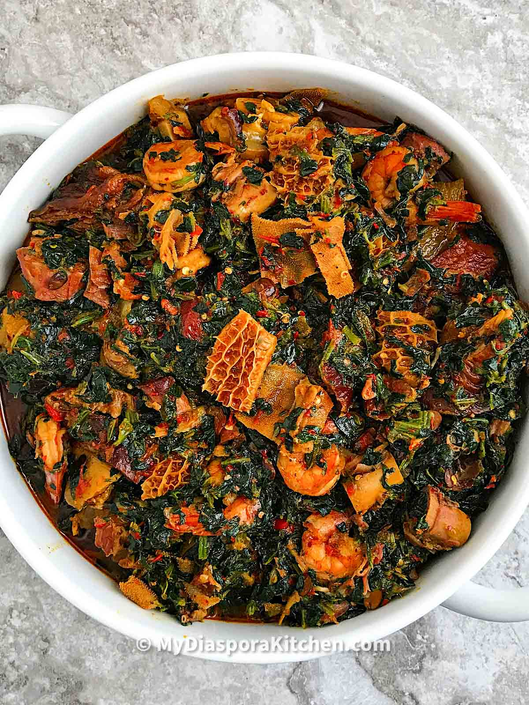

Efo Riro

Description
Efo rori is a delicious Nigerian spinach stew recipe, that originated for the western region in Nigeria, specifically the Yorubas. It is said to mean stirred spinach in Yoruba language.
It ranks with the likes of Afang soup and Edikang ikong in Nigerian cuisine. You won’t be wrong if you said Efo riro is to the Yorubas what Edikang ikong is to the Efiks and Ibibios.
Ingredients
- Bunches of green vegetables (efo tete) subtitute with fresh or frozen spinach
- Red bell peppers (tatashe)
- Scotch bonnet chillies
- Onions
- Palm oil
- Locust beans (Iru woro)
- Dried shawa/palamu (dried smelt fish)
- Smoked mackerel
- Smoked ponmo, washed and diced
- Ground crayfish
- Salt
- Seasoning cubes
Prep and Tips
I used smoked dried ponmo for this recipe, you can also use fresh ones if you want. If you are using the dried ones, soak them in warm water for at least 36-48 hours. Wash ponmo clean (use clean wired scourers for an easier job) and set aside
- Pick the vegetable from the stalk and slice into chunks
- Rinse vegetable clean, drain and set aside
- Wash locust beans and set aside
- Chop 1 onion and set aside
- Shred the smoked fish into flakes and also set aside
- Roughly chop the bell pepper (tatashe) and onions, add to a blender and pulse for coarse texture (alternatively, use a food processor for perfect coarse texture)
Steps
- Place a pan on medium heat and add palm oil, heat for about 5 minutes but don’t bleach
- Followed by iru woro, chopped onions and fry in the oil for about 2 minutes (In this case I used half of the locust beans and saved the rest to be used before I finished cooking the soup). Add blended pepper to the palm oil and stir to combine, after about 3 minutes, add the remaining locust beans. Move on to add the diced ponmo and ground crayfish and cook for another 3-4 minutes on low heat
- Add seasoning and pinch of salt. (check for salt at the later stage of the cooking)
- Whilst you are waiting for the sauce to cook, boil water enough to cover the vegetable. Once the water is boiled, pour over the vegetable and cover with a lid for 5-10 minutes. Strain and squeeze out excess water from the vegetable.
- Continue to cook the sauce till oil floats on the top, add half of the smoked fish, dried smelt fish and stir to combine. (You can add little water to the sauce if it is too dry but do not overdo it as efo riro is almost water free)
- Add the vegetable to the sauce and stir till all is well incorporated.
- Add the remaining smoked mackerel and carefully combine in the vegetable. Check for salt and cook for another 4 minutes. Take it off the heat and set aside.
Serve efo riro soup with a swallow of choice or rice and you can even choose to eat it on its own.